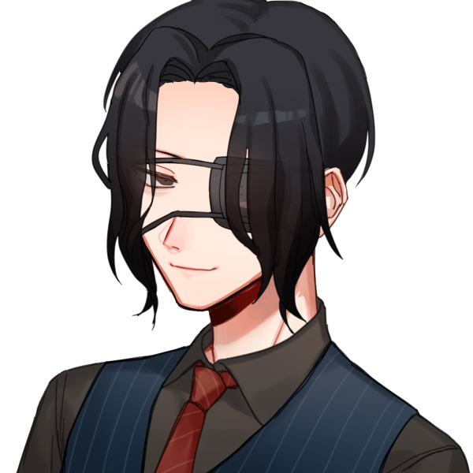
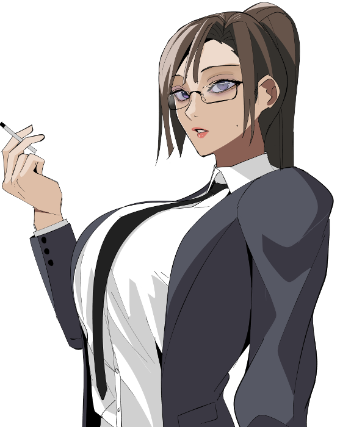
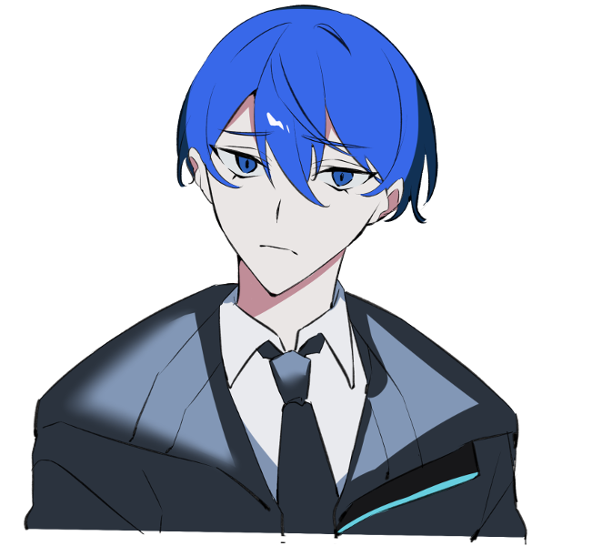

メインログ / 雑談ログ
キャラシート
PC1：夜鷹守人 (キャラシート) PL：雅PC2：ヤオトモヤ (キャラシート) PL：タロベ-
PC3：不破栞 (キャラシート) PL：LISP
PC4：スコア (キャラシート) PL：めい
目次
ステージ設定HO&PC紹介
01 夜鷹守人 オープニング
02 ヤオトモヤ オープニング
ステージ設定
西暦2050年の世界
【あらすじ】
西暦2030年。
リボット社は史上初のチューリングテストをパスしたアンドロイドを開発。
VOID(ボイド)と名付けて世界に発表した。
VOIDは瞬く間に世界に拡散。
アンドロイドがいる生活は人々にとって日常となった。
それから20年後の2050年。
2つの事件が世間を騒がせていた。
アンドロイドの連続破壊事件。
アンドロイドによる連続殺人事件。
警視庁は2つの事件を終息させる為、
新たに警視庁公安部第五課アンドロイド事件捜査係を設立したのであった。
【現在の日本】
2030年にリボット社がVOIDの販売を開始してから20年。
日本ではアンドロイドが多種多様な現場で活躍していた。
VOIDの誕生によって、人々は快適な生活を手に入れたが、
その一方で大きな代償もあった。
多数の人間が仕事を失ったのだ。
アンドロイドは、優秀で勤勉だ。
医療・福祉・教育・警察・軍事…………果ては芸術まで。
およそできないことはなかった。
優秀で勤勉なアンドロイド達は、人間達の職業を奪ってしまった。
このように失業率は大幅に上昇。 東京都の失業率は約30％に及ぶ。
失業者によるデモ活動等が頻発していることから、この社会問題は早期解決が求められているのだが────
【世間を騒がす事件】
現在の日本を騒がせている2つの事件(アンドロイド事件)の詳細は、
情報規制が敷かれているため公表はされていない。
がしかし、それもカンペキなモノではないらしい。
一連の事件はテロリストによる犯行だと人々の間で噂されている。
西暦2050年の警察
【警視庁公安部第五課アンドロイド事件捜査係】
PC全員所属の部署。 通称はドロ係。
増加の一途を辿るアンドロイド関連事件の解決の為に新設された。
戦闘能力と調査能力を共に備えた人間と機体が集められているが、
そこに向けられるのは羨望の視線だけではない。
アンドロイド反対派の一部の刑事は、
「アンドロイド犯罪解決にアンドロイドを使う」
という点で敵視している場合もある。
(なおPC全員の顔合わせは今回が初)
【現在の警察組織】
3年ほど前からアンドロイドが導入されており、
捜査は人間とアンドロイドのツーマンセルが義務付けられている。
だがしかし、アンドロイド導入反対派の人間も未だ少なくはない。
彼等によるアンドロイドに対する嫌がらせ等は日常茶飯事である。
【テロリスト？】
数年前から東京に存在すると言われている組織。
失業者の集団だとかプロハッカーの集団だとか、様々な噂話が流れているがどれも信憑性はない。
アンドロイド破壊事件の現場で、そのリーダーと思しき男が目撃されたことから、
再び世間の注目が集まっている。
VOID
リボット社が開発したアンドロイド。
一般販売されているのは家事用だが、
他にも医療から軍事まで様々な分野で起用されている。
その機種によって機能と容姿は違い、
容姿については人間と変わらないが、
区別を付ける為、機体に製造番号とマークの刻印が義務付けられている。
値段は家事用モデルで100万円程度。
貧困層と反対派を除いた大半の人間がアンドロイドの恩恵を受けている。
SF作家アイザック・アシモフが唱えたロボット工学三原則が組みこまれており、
「人間に危害を加えないよう設計されている」とリボット社は発表しているが、
昨今発生している連続殺人事件によって、世間からは疑問の声も上がっている。
【VOIDの材質】
パーツは主にプラスチックで構成されている。
"ブルーブラッド"と呼ばれる青い液状の物質でエネルギーを循環させており、これを定期的に供給しなければ機能停止してしまう(その代わり充電は不要)。
このブルーブラッドはアンドロイドの体外に排出されると気化してしまう為、人間の肉眼では痕跡を確認する事はできない。
【アンドロイドPCの変更点】
・人間よりも頑丈である為、HPはSIZ+CONで算出
・アンドロイドは≪機械修理≫技能でHPを回復する(回復量は2d3)
※医学や応急手当で回復はできない
・アンドロイドはHPが0になっても死亡することはないが、
人間の海馬にあたる部分にある"スタック"と呼ばれる記憶データを破壊された場合、
全ての記憶を失って初期化される。 SAN値が0になった場合も同様に初期化される。
※スタックが生きていればオーバーキルされても修理可能
・警官アンドロイドとして以下の追加機能を備える
1.見た映像をそのままデータに記録する録画機能
2.アンドロイド同士や無線機との情報の受け渡し
3.≪ナビゲート≫技能を≪コンピュータ≫技能で代用(周辺地形データ取得によるもの)
※その他にも追加機能の要望があれば、KPの許可があれば取得可能（味覚機能など）
【アンドロイド法】
VOID導入に伴って新たに規定された法律。 ロボット工学三原則に習って作られている。
この法を破ったアンドロイドは破壊される。
第一条：ロボットは人間に危害を加えてはならない。
また危険を看過することによって、人間に危害を及ぼしてはならない。
第二条：ロボットは人間に与えられた命令に服従しなければならない。
ただし、与えられた命令が第一条に反する場合は、この限りでない。
第三条：ロボットは、前掲第一条および第二条に反する恐れのない限り、自己を守らなければならない。
第四条：ロボットは武器の所持を認められない。
しかし免許を所得している者はこの限りでない。
第五条：アンドロイドは必ず製品番号とマークを機体の一部に刻まなければならない。
警官アンドロイドも当然ながらアンドロイド法を遵守する必要があるが、
捜査に必要な武器の所持や戦闘は、係長(緊急の場合はパートナー)の許可を得れば可能。
【リボット社】
VOIDの発表によって、たちまち経済の中心となったアンドロイド製造会社。
人間とアンドロイドの共和を掲げ、都会の中心に巨大なビルを構えている。
創設者はVOID開発者の有馬真仁(アリマシンジ)。
西暦2050年の武器
【電子刀】 [技能:日本刀] [ダメージ:1d10+1+DB(一刀)/2d10+2+DB(二刀)] [耐久力:20]
[解説]頑丈なアンドロイドのボディをも容易に溶断する最新型プラズマブレイド。
グリップ部分のエネルギーを刀身にしている為、あらゆる長さに変形可能である。
[特記事項]
二刀のデータ使用時は、命中判定に-10のペナルティ修正を受ける。
この武器は銃弾も受け流し可能。
この武器が壊れた場合、自身の手番を消費して再生する事ができる。
【電磁鞭】 [技能:ムチ/電気修理] [ダメージ:2d8+DB+スタン] [耐久力:8]
[解説]暴徒鎮圧用の最新武器。
対象の四肢か武器を絡め取り、感電させる事で一切の抵抗を許さずに鎮圧可能。
[特記事項]
この武器の攻撃の対象は、受け流しを行なう事ができない。
この武器は受け流しに使用する事ができない。
【ジャックナイフ(射撃)】[技能:拳銃][ダメージ:スタン][射程:20m][攻撃回数:2][耐久力:20]
【ジャックナイフ(斬撃)】[技能:ナイフ][ダメージ:2d6+2+DB][耐久力:20]
[特記事項]
至近のキャラクターがアナタに対して行なう攻撃に失敗した時、
アナタは相手に対してナイフを用いた反撃を行なう事ができる。
この反撃に命中判定と回避判定は不要である。 ダメージ算出だけを実行する事。
この効果は1ラウンドに1度まで使用できるが、これ以外の武器を装備している場合は使用できない。
【音波銃】 [技能:拳銃] [ダメージ:4d6(対機械)/2d6(対人間)] [射程:20m] [攻撃回数:1] [耐久力:8]
[解説]対アンドロイド用の音響武器。 対象を内部から共振破壊する。
アンドロイドの機械心臓にダイレクトにダメージを与える事で"スタック"を残した状態で鎮圧が可能。
その構造上、人間には効果が薄いが、その為に誤射のリスクは低い。
この武器はセーフティをかければ"拡声器"として用いる事もできる。
[特記事項]
この武器の攻撃の対象は、回避判定に-20のペナルティ修正を受ける。
【サードアイ】
[解説]鳥類や魚類といった様々な動物に見られる"第六感"をAI技術によって再現。
AIが事前に危機を検知して、ユーザーに最適な行動を提示する事で、
その直撃の回避を可能にする、最新のサポートAI搭載レンズ。
眼鏡型とコンタクトレンズ型が存在している。
ボディアーマーに対して防御性能は劣るが、重量がゼロなので機動性に優れるのが利点。
将来的には「一切の危険の予測と回避」を目標にしているらしいが、
予測開始から行動開始に存在するタイムラグの関係で、その目途は立っていない。
[特記事項]
アナタの受けるダメージを6点軽減する。
この効果は行動に一定以上の制限がある場合は適用できない。
(例:拘束されている/重い物を所持している/アーマーを装備している)
ハウスルール
・クリティカル値は001、ファンブル値は100、スペシャルは非採用
・貫通と連射と先制射撃とゼロ距離射撃のルールは非採用
・回避/受け流しをする場合はラウンド間の使用回数に応じたペナルティ修正を受ける
※『技能値÷使用回数』で判定を行なう※
【かばうについて】
未行動のキャラクターのみが宣言できる。
至近のキャラクター1体が受ける予定のダメージを肩代わりする事ができる。
この効果を使用したキャラクターは即座に行動済になる。
【スタンについて】
スタン効果のある武器の攻撃を受けた場合、対象は即座にの判定を行なう。
その判定に失敗した場合、対象は次の自分の手番の終了時まで全判定に-20のペナルティ修正を受ける。
※スタン効果を2度受けても、このペナルティ修正は重複しない※
その判定に失敗した場合、対象は次の自分の手番の終了時まで全判定に-20のペナルティ修正を受ける。
※スタン効果を2度受けても、このペナルティ修正は重複しない※
HO&PC紹介
KP :
まずPCの紹介から始めていきます！！
KP :
初めにHO1の守人くんおねがいします！
夜鷹 守人 :
はい！短めにいきますよ

HO1：アンドロイド嫌いの新米刑事 ※22歳限定
あなたは優れた頭脳と才能の持ち主だ。INTを18とする。
しかしアンドロイドからは遠のいた生活を送っていた為、
電子工学/電気修理/機械修理に技能を振る事ができない。
夜鷹 守人 :
「警視庁公安部第五課、アンドロイド事件捜査係。刑事の夜鷹守人です」
夜鷹 守人 :
やや痩せこけて不健康そうに思える男は自らの名を名乗り、軽く頭を下げる。
夜鷹 守人 :
「年齢は22歳。まあ……この年齢で刑事は異例でしょうが、俺のやりたいことが出来るんで……突き詰めていたらこのキャリアにいました」
夜鷹 守人 :
「好きな物は30年代より前の映画。苦手なことはスポーツ全般……」
夜鷹 守人 :
「──嫌いな物は、アンドロイド」
夜鷹 守人 :
"アンドロイド"。その名を口にした途端、彼の声に嫌悪が混じる。
夜鷹 守人 :
「……奴らのことはどうにも、出来れば目にもしたくないんですが……」
左目につけられた眼帯を指でそっとなぞる。彼の癖のようなものだ。
夜鷹 守人 :
「ああ、失礼。では、俺は用事があるのでここで。いずれまた」
再び頭を下げて、背中を向けてこの場を後にしようとする。
夜鷹 守人 :
「……俺は、絶対に……っ」
夜鷹 守人 :
去り際にふと独り言が零れる。
彼の片目は鋭く虚空を見つめて、怒りにも似た情熱が瞳の中で揺れていた。
夜鷹 守人 :
キャラシート
KP :
このPC1、あからさまに闇が深いのだ…！！
KP :
一家に一台アンドロイドの時代なので、めちゃめちゃ生きにくそうだけど頑張ってほしいですね…
KP :
次にHO2のトモヤくんおねがいします！！
ヤオ トモヤ :
はい！

HO2：新型アンドロイド
あなたはHO1のパートナーロボットだ。
アンドロイド事件捜査係の設立と同時に作られた最新の機体であり、
高機能モデルである為、≪コンピュータ≫技能の初期値を80とする。
ヤオ トモヤ :
「初めまして！警官アンドロイドのヤオ トモヤと申します 」
「器用かつ丈夫、強く賢い私はきっとお役に立つことでしょう！！ドロ係の皆様、これからよろしくお願いします！！！」
ヤオ トモヤ :
警視庁公安部第五課アンドロイド事件捜査係に配属された新米刑事であり、リボット社がその知恵と技術の限りを尽くし設計、開発した最高傑作です。
ヤオ トモヤ :
授けて頂いた機能をフルに使って人間の皆様、そして相棒となる夜鷹さんの為に力の限り尽くすつもりです。
ヤオ トモヤ :
よろしくお願いします〜！
ヤオ トモヤ :
キャラシート
KP :
元気な新型アンドロイド！ その元気さで守人くんを支えてあげてね！！
KP :
まあ、支えようとするほど拒絶されそうではありますけど…
KP :
事件を通して関係を深めて……もらえれば……！！！！
KP :
続いてHO3の不破さんおねがいします！！！
不破 栞 :
いくぜ！！！！

HO3：ベテラン刑事 ※30代限定
あなたは他部署から異動してきた刑事だ。
かつては警視庁捜査第一課の刑事として、いくつもの刑事事件を解決に導いてきた。
これまでの功績もあって、周囲の信頼を得ている為、
任意の≪交渉系技能≫の初期値を+50する。
不破 栞 :
「不破栞。交通課からやってきた、ドロ係の中じゃベテランの刑事だ」
不破 栞 :
「一度は出世コースから外れてまともな捜査の仕事は回ってこなかったんだが……人生何があるかわからないものだな」
不破 栞 :
「個人的な興味でアンドロイドの事情には明るいほうだ。この係での仕事に活かせるといいな」
不破 栞 :
元捜査一課のエース、おば……お姉さん刑事です！ 小説やドラマの名探偵のようなひらめきはないけど経験に裏打ちされた泥臭い操作が売り！
不破 栞 :
戦闘は射撃武器としても使えるジャックナイフを用いた遠近両対応タイプです。2050年を生き残るぞ！
不破 栞 :
ちなみに交通課にいたけど左遷されただけだから運転とかはからっきしです。よろしくな！
不破 栞 :
キャラシート
KP :
2050年の自動車は自動運転機能が標準搭載されているので、運転がからっきしなのは仕方ないね！！
KP :
おば姉さんだけあって、PCではブッチギリの最年長で人生経験豊富そうなので、いろいろな問題を抱えた皆をまとめるムーヴが期待できそう！！
KP :
最後にHO4のスコアちゃんおねがいします！！！！
スコア :
はい！！！！

HO4：旧型アンドロイド
あなたはHO3のパートナーロボットだ。
HO3とは確固な信頼関係を築いており、その点でもHO2の先輩と言えるだろう。
任務に忠実なロボットであるハズだが、実は誰にも言えない秘密を抱えている。
≪■■■■■≫の初期値を80とする。
スコア :
HO4、旧型アンドロイドのスコアです！
スコア :
何故か記憶喪失で、一年前に倒れていたところを栞ちゃんに拾われてなんやかんやでパートナーロボットになりました。
スコア :
アンドロイドだけど堅苦しくなくて、馴れ馴れしくて緩い感じの性格です。
スコア :
あんまり細かいこと気にしなくて、アンドロイド反対派に嫌われてても別にまあどうでもいいか～って感じ。
スコア :
栞ちゃんのことをマスターって呼ぶくらい好きで懐いてるので、べたべたくっついてたりしてると思います。
スコア :
あとよく栞ちゃんの体を心配してて、それがきっかけで医学習得しました。マスターは早く煙草やめろ！
スコア :
歌を歌うことが好きなキャラなので、そこから連想して武器は超音波を飛ばす拡声器型の銃にしてもらいました。
スコア :
狂ったアンドロイドどもの心臓をピンポイントで撃ってぶっ壊してやるぞ～、そんな感じですよろしくお願いします！
スコア :
キャラシート
KP :
同族に容赦ない…！ 所詮は機械に人の心などないというコトか…！！
スコア :
ロボットのルールを破るやつが悪いのよ！！
KP :
それはそれとして男子ペアに対して女子ペアは仲良しそうで微笑ましいですね！
KP :
まあ、そんなスコアちゃんも秘密を抱えている訳ですが……
スコア :
表HOの時点で秘密があるとか言われるやつ
スコア :
謎の技能も持っている
KP :
初期値80%の謎の技能、活躍する時は来るのか…。 本編の動向を楽しみにしておきましょう…。
KP :
ではでは自己紹介も済んだところで、本編をはじめていこうと思います！
HO1：アンドロイド嫌いの新米刑事 ※22歳限定
あなたは優れた頭脳と才能の持ち主だ。INTを18とする。
しかしアンドロイドからは遠のいた生活を送っていた為、
電子工学/電気修理/機械修理に技能を振る事ができない。
左目につけられた眼帯を指でそっとなぞる。彼の癖のようなものだ。
再び頭を下げて、背中を向けてこの場を後にしようとする。
彼の片目は鋭く虚空を見つめて、怒りにも似た情熱が瞳の中で揺れていた。
HO2：新型アンドロイド
あなたはHO1のパートナーロボットだ。
アンドロイド事件捜査係の設立と同時に作られた最新の機体であり、
高機能モデルである為、≪コンピュータ≫技能の初期値を80とする。
「器用かつ丈夫、強く賢い私はきっとお役に立つことでしょう！！ドロ係の皆様、これからよろしくお願いします！！！」
HO3：ベテラン刑事 ※30代限定
あなたは他部署から異動してきた刑事だ。
かつては警視庁捜査第一課の刑事として、いくつもの刑事事件を解決に導いてきた。
これまでの功績もあって、周囲の信頼を得ている為、
任意の≪交渉系技能≫の初期値を+50する。
HO4：旧型アンドロイド
あなたはHO3のパートナーロボットだ。
HO3とは確固な信頼関係を築いており、その点でもHO2の先輩と言えるだろう。
任務に忠実なロボットであるハズだが、実は誰にも言えない秘密を抱えている。
≪■■■■■≫の初期値を80とする。
本編
01 夜鷹守人 オープニング
KP :
まずは個別導入！ HO1の守人くんから！！
夜鷹 守人 :
いえーい！
西暦2040年/■■月■■日/PM08:13/天気:雷雨/■■家
KP :
年季の入った蓄音機から、壮大な音楽が流れている。
KP :
ニコロ・パガニーニによる24の狂想曲(カプリース)、その最終曲。
KP :
このヴァイオリンの旋律が好きだと話してくれたのは誰だっただろうか。
KP :
その美しい音が、右の耳から左の耳へと抜けていく。
KP :
思考は真っ白で、視界は真っ赤だ。
KP :
暗い部屋に血の海が広がっていて、
KP :
すぐ目前に女の人が転がっている。
KP :
──そして、音もなくアナタに忍び寄る影がひとつ。
KP :
それは"ひとりの人間を殺しておいて"酷く落ちついた様子で歩いてきた。
KP :
雨がザアザアと窓ガラスを打つ。
KP :
ふいにレコードの旋律が止まり、雨音以外は何も聞こえなくなる。
KP :
賢いアナタには、自分の置かれた状況が理解できた。
KP :
誰かに助けを求めて叫ぼうとも、救いの手が伸ばされる事はない。
KP :
子供の叫び声など、激しい雨音に遮られて誰にも届かないだろう。
KP :
だから"自分で逃げなければならない"と理解できた。
KP :
しかし、身体は1mmも動かない。 動いてくれない。
KP :
その代わり、アナタの目から熱いナニカが溢れ出す。
KP :
"左目を斬られて"流れた血なのか、
KP :
"母親を殺されて"流れた涙なのか。
KP :
いまいち判然としない、ナニカが。
■■■■ :
「…………」
KP :
やがてアナタに大きな影が落ちる。
KP :
アナタの母親を殺して、アナタの左目を奪った犯人。その人影が。
KP :
確定した死が迫る。
KP :
心臓が跳ねる。 息は止まり、声も出ない。
KP :
……アナタはただ「自分も殺されるのだ」と知った。
KP :
その瞬間。
KP :
雷光が室内に差しこみ、犯人の手元を照らした。
KP :
そこには真っ赤な血が滴るナイフ。
KP :
それを握る右手を見て「ああ」と合点がいった。
KP :
犯人の身体は、金属とプラスチックで造られていた。
KP :
──即ちアンドロイドだったのだ、人殺しに動揺をする訳がない。
KP :
血塗れのナイフが閃く。
KP :
この状況では無為な思考を最後に、
KP :
アンドロイドの凶刃は、アナタの心臓へと躊躇なく振り下ろされ、
KP :
そして────────
西暦2050年/10月15日/AM10:45/天気:小雨/夜鷹家
KP :
何かに締めつけられるような感覚。
KP :
苦しい。けれど、どこか、温かい。
KP :
ジリリリリリ！ ジリリリリリ！！
KP :
耳障りな目覚ましアラームの音で、アナタは見慣れた夢から目覚める。
KP :
────今日もイヤな悪夢を見た。
KP :
この夢を見るのは、もう何度目だろう。
KP :
ということで！ 悪夢を見たことで初のSANチェックどうぞ！！ 成功で0/失敗で1のSAN値減少です！！
夜鷹 守人 :
cc<=55(1D100<=55) ＞ 96 ＞ 失敗
夜鷹 守人 :
？？？？
system :
[ 夜鷹 守人 ] SAN : 55 → 54
KP :
開幕から凄い出目を出すじゃん
夜鷹 守人 :
幸先が悪いぜ！！
KP :
まあ、それだけトラウマだったのかもしれないですね…
KP :
ではでは描写の続きを
KP :
アラームを止めようと手を伸ばすが、別の手が先に時計に手を置いた。

赤星 透也 :
「……大丈夫か？すごい汗だぞ」
KP :
そこにいたのは見慣れた青年だった。
KP :
赤星透也。アナタにとって兄のような存在だ。
KP :
義父と同じ捜査一課に所属する彼は、今日からアナタと同じ部署に異動する予定になっている。
KP :
『そういえば今日は警視庁に向かう日だった』と寝惚けた頭で考える。
KP :
……なんだか今日は寝起きが悪く、少し頭痛もする。
KP :
時刻を見れば11時を回ろうとしていた。
KP :
配属初日から寝坊してしまったらしい。
夜鷹 守人 :
「……透也、兄さん……」
片手で頭を抑え、残った右目で彼を見上げる
片手で頭を抑え、残った右目で彼を見上げる
夜鷹 守人 :
「少し、悪い夢を……大丈夫。 いや、大丈夫ではないか……」
時計が指す時刻を見て、落ち込んでいた気持ちが更に深まっていく。
時計が指す時刻を見て、落ち込んでいた気持ちが更に深まっていく。
赤星 透也 :
「まあ、今日は昼過ぎに顔合わせがあるくらいだからギリギリセーフだろ」
赤星 透也 :
「部署への引っ越し作業は、午前に済ませる必要があるけどな」
夜鷹 守人 :
「あー……、今から動かないと駄目なヤツ……」
気だるい身体を起こして、いそいそと準備を始める
気だるい身体を起こして、いそいそと準備を始める
夜鷹 守人 :
「そういえば兄さん、わざわざ起こしにきてくれたんですか」
軽く寝汗をウェットシートで拭い、シャツを着替える
軽く寝汗をウェットシートで拭い、シャツを着替える
赤星 透也 :
「ああ、そんなとこだ」
赤星 透也 :
「数年前にもあったろ、例の夢で寝坊したコト」
夜鷹 守人 :
「ああ、まあ……手を煩わせてます……」
どこかバツが悪そうな声で返す
どこかバツが悪そうな声で返す
赤星 透也 :
「……それはいいんだけどさ、もう忘れた方がいいと思うぜ？」
赤星 透也 :
「いつまでもそんな調子じゃ困るだろう？ カウンセリングとか通ってみたらどうだ？」
夜鷹 守人 :
「…………」
ネクタイを締めていた手を止め、透也に縦に傷の走った左目を向ける
ネクタイを締めていた手を止め、透也に縦に傷の走った左目を向ける
夜鷹 守人 :
「兄さんと言えど、今の言葉は聞き流せませんよ」
赤星 透也 :
「……俺は心配して言ってるんだがな」
赤星 透也 :
「もう過去は忘れて今を生きるべきじゃないかってさ」
夜鷹 守人 :
「俺が今を生きているのは"10年前"の真相を突き止めるためですよ」
夜鷹 守人 :
「そのために刑事になった、そう言っても過言ではありませんから」
左目に眼帯をかけ、寝起きの支度が整い終る
左目に眼帯をかけ、寝起きの支度が整い終る
赤星 透也 :
「はあ、そうだよなあ……もう何を言ってもムダそうだな……」
赤星 透也 :
「その覚悟は認めるが、今はとりあえず初日から遅刻しないコトを最優先に生きてくれ」
赤星 透也 :
「俺は先に車を出してくるから、朝食……もう昼食か。食べたらこいよ」
夜鷹 守人 :
「昼飯は携帯食とサプリメントで済ませますよ。ただでさえ時間がありませんし」
赤星 透也 :
「おまえなあ……そんなことしてると、また"矢代さん"に怒られるぞ……」
夜鷹 守人 :
「……そういう所も厳しいですからね、父さんは……」
渋い顔を浮かべる
渋い顔を浮かべる
赤星 透也 :
「朝食の準備は済ませてあるから、いいからリビングに降りて食べてこい」
夜鷹 守人 :
「そうさせて貰います…」
KP :
赤星と別れて階段を下りてリビングに向かう。
KP :
ここではさらっと家の探索ができます！ 遅刻寸前なのでさらっと！！
KP :
探索可能個所を提示するので、調べたいものを言ってもらえれば！！
KP :
【探索箇所】机/テレビ/床
夜鷹 守人 :
机から行くか！
KP :
机の上にはラップのかけられた朝食が用意されている。
KP :
近くにはメモの切れ端が置かれてあり、そこには「朝食は少しでもいいから食べること。先に行っている」と達筆な字で書いてあった。 矢代の字だ。
KP :
とそんなところですね！ しっかりと食事を摂りなさい…(まだ出ていない義父の重圧)
夜鷹 守人 :
「父さん、厳しいけどこういう所は優しいよな…」
義父の優しさを垣間見て微笑みを零す
義父の優しさを垣間見て微笑みを零す
夜鷹 守人 :
それじゃ流れでテレビ見るか！食べながら見てみよう
KP :
テレビをつけるとちょうど朝の番組が放映されていた。どうやら昔のアニメの再放送のようだ。
KP :
大きな機体のロボットが怪物と対峙している。
KP :
ここでアイデアロールどうぞ！
夜鷹 守人 :
cc<=90 この数値を見ろ！！(1D100<=90) ＞ 61 ＞ 成功
KP :
さすがはINT18の天才
KP :
ではではこのアニメにどこか懐かしさを覚える。誰かと一緒にこのアニメを見たことがあるような気がする。
夜鷹 守人 :
「（このアニメ、なんだったか……誰かと見たような気も……）」
霧がかった脳内にぼんやりと昔の光景が浮かぶが、はっきりとせずに霧散してしまう
霧がかった脳内にぼんやりと昔の光景が浮かぶが、はっきりとせずに霧散してしまう
夜鷹 守人 :
それじゃ最後の床！！
KP :
≪目星»をどうぞ！！
夜鷹 守人 :
cc<=75 右目だけでもね、目星は使えるんですよ(1D100<=75) ＞ 97 ＞ 失敗
夜鷹 守人 :
は？？？？？？？？
KP :
もしかして両目をなくされました？
夜鷹 守人 :
スケベなアンドロイドに惑わせられないように両目潰しといた
KP :
アンドロイド嫌いのハンデが重すぎる
KP :
ではでは、寝惚けていたせいか何も見つけることができませんでした！
夜鷹 守人 :
「っと、ボーっとしてる暇は無いな」
用意された朝食をかきこみ、水で流し込む
用意された朝食をかきこみ、水で流し込む
夜鷹 守人 :
手持ちに忘れ物がないかチェックして、外に出ます
KP :
外に出れば小雨が降っていた。
KP :
今の季節のこの地域は肌寒く、アナタは思わず身震いをする。
KP :
その様子を見て赤星は乗れよ、とアナタを助手席に誘導した。
夜鷹 守人 :
軽く会釈して助手席に乗り込もう
KP :
あなたが車内に乗りこむと「目的地はどちらですか？」と機械音声が鳴る。
KP :
それに赤星は「警視庁へ」と答えて車は自動発進した。
KP :
ここ数十年で科学はかなり進歩し、自動車さえも自動運転は珍しいことではなくなったのだ。
KP :
車はそのまま都内を走っていく。
KP :
車窓から見える街の景色はいつもと変わらず高層ビルが立ち並び、
KP :
その下では人々がアンドロイドに傘を差させて歩いている。霧も少し出ているようだった。
夜鷹 守人 :
目に入ったアンドロイドから無意識に目を逸らし、手元の携帯端末に視線を落とす。
夜鷹 守人 :
「……微妙な天気ですね」
世間話とも独り言とも取れるような言葉を漏らす
世間話とも独り言とも取れるような言葉を漏らす
赤星 透也 :
「そうだな、最新の気象予報アンドロイドの演算通りの天気だ」
赤星 透也 :
「しかし傘くらい自分で差せばいいのになあ」VOIDに傘を差させる人間たちを眺めている
赤星 透也 :
「今となっては自分でアラームをかけて起きるのも、おまえと矢代さんくらいだよ」
赤星 透也 :
「どの家庭も家庭用VOIDが人間サマの睡眠管理をしてるからな」
夜鷹 守人 :
「生活リズムをVOIDに管理されている、そういう風にも見れますね」
夜鷹 守人 :
「……便利なのは良い事ですが、兄さんの言う通りアレぐらいは人間1人でもできます」
アンドロイドに傘を差させている人間に再び目を向けて
アンドロイドに傘を差させている人間に再び目を向けて
赤星 透也 :
「そうだな、ああいうのを嫌悪するのは別にいいんだが」
赤星 透也 :
「これからは、おまえもあんな風にアンドロイドの世話にならなきゃいけないんだぜ？」
赤星 透也 :
「今日だろ、おまえのパートナーアンドロイドとの顔合わせ」
夜鷹 守人 :
「…………」
とてつもなく渋い顔
とてつもなく渋い顔
夜鷹 守人 :
「……思い出させないでくださいよ。悪夢の続きかと錯覚させたいんですか」
KP :
そんな話をしながら外を眺めていると、やがて警視庁が見えてきた。
KP :
そしてその向こうにはひときわ目立つ大きなビル────リボット社が見える。
KP :
約20年ほど前、家庭用ロボットを販売してから業績を伸ばし続けている会社だ。
KP :
今や知らぬ人はいないだろう。アンドロイドは人々にとって生活の一部となったのだから。
KP :
それでも"あなたにとっては"縁がない会社だったのだが────
赤星 透也 :
「そうもいかないだろ？」
赤星 透也 :
「今やアンドロイド……VOIDは刑事のパートナーとしても起用されてる」
赤星 透也 :
「いくら係長の息子だからといって、組織に逆らって拒否する訳にはいかないんだから」
夜鷹 守人 :
「それは、そう……なんですけど、ね……」
両手で顔を覆い、その中でもどかしい気持ちと共に溜息を吐き出す
両手で顔を覆い、その中でもどかしい気持ちと共に溜息を吐き出す
夜鷹 守人 :
「……嫌だなぁ」
警視庁を恨めしく見上げて、小声で恨み言を呟く
警視庁を恨めしく見上げて、小声で恨み言を呟く
赤星 透也 :
「こんな調子で大丈夫かねえ」言いながらラジオを付ける
ラジオ :
「東京都のみなさんこんにちは！10月15日12時ちょうどをおつたえします！今日もはりきって生活をしましょう！では今日の運勢から！」
KP :
毎日やっている占い番組だ。あなたは何の気なしにそちらに耳を傾ける。
ラジオ :
「────そして、本日の最下位は～～～～？？？？」
ラジオ :
「ざんねーん、天秤座のアナタ！厄介な出来事に巻き込まれちゃうかも！？」
ラジオ :
「十分注意して過ごしてくださいね！ラッキーカラーは赤！」
夜鷹 守人 :
「───兄さん、ラジオ消しても、いいですか」
外の天気よりどんよりした表情を浮かべている
外の天気よりどんよりした表情を浮かべている
赤星 透也 :
「はは、いや当たってるだろコレ」
赤星 透也 :
「実際に厄介な出来事に巻きこまれる予定もあるんだしさ(パートナーアンドロイドとの顔合わせ)」
夜鷹 守人 :
「今日は人生で憂鬱だった日トップ5に入りそうですよ、もう……」
背もたれに体重を預けて脱力
背もたれに体重を預けて脱力
KP :
二人が話している間に番組は切り替わり、ニュース番組が始まる。最近は「アンドロイドによる殺人事件」と「アンドロイド破壊事件」の話題でもちきりだ。
KP :
これからそういった事件に対応していくのは自分たちなのだ、とニュースに聞きいっていると、車は目的地である警視庁に到着する。
KP :
……これから自分と活動するVOIDとは、どんなアンドロイドなんだろうか。
KP :
少しの期待と多くの不安と共に、アナタは警視庁の正門を潜った。
02 ヤオトモヤ オープニング
KP :
HO1の守人くんの導入が終わり、HO2のトモヤくんの導入に入ります！
ヤオ トモヤ :
はい！(よろしくお願いします‼︎)
西暦■■■■年/■■月■■日/■■:■■/天気:■■/■■■
KP :
うっすらと目を開ける。
KP :
そこは薄暗い実験室のような場所だ。
KP :
アナタは何かの台にのせられており、周りには見たことのないような機器類が並んでいる。
KP :
そしてアナタは白衣を身にまとった人間たちに囲まれていた。彼らは一斉にこちらに目を向ける。
KP :
その視線は冷たく、そして気味が悪いとアナタは感じる。
KP :
その集団の中央、ひときわ冷たい目線を向ける男は、アナタと目が合うと「実験は成功だ」そう言い放った。
KP :
ではトモヤくん≪聞き耳≫をどうぞ！
ヤオ トモヤ :
ccb<=75 【聞き耳】よぉし！(1D100<=75) ＞ 22 ＞ 成功
KP :
これは優秀
KP :
「ずっとこの時を待っていた。さすが私の■■だ。これなら■■■■■■■■■■」
KP :
ところどころノイズが走り聞こえなかったが、男がそう呟いたのが分かります。
KP :
そして男はアナタに手を伸ばす。その手は冷たく、どこか無機質だ。そう思いながら、アナタは目を閉じた。
KP :
アナタは再び目を覚ます。
KP :
どこまでも白く続く広い空間にアナタはいた。
KP :
白い椅子に腰掛けており、目の前には同じように椅子に腰掛けている男がいる。

謎の男 :
「やあ、こんにちは。また会ったね」
謎の男 :
「……なんだか顔が強張っているようだけど、怖い夢でも見たのかな？」
謎の男 :
「怖がることはないよ。この空間の中で、君を傷つけるものは何もないからね」
謎の男 :
「さっそく今日も話をするとしよう。なに、単なる雑談さ」
KP :
落ち着いた様子で男は話しかけてくる。
謎の男 :
「────最近の調子はどうかな？たしか君は今日から本格的に活動を開始するんだったね」
ヤオ トモヤ :
「……こんにちは。そうなんですよ、今日から私、警官として本格的に使用して頂けるんです！」
謎の男 :
「使用して頂ける、か」
謎の男 :
「科学が発展した今の社会では、君たちVOIDは警察の捜査まで任されるようになった訳だ、まったく目まぐるしい進化だね」
謎の男 :
「数十年前まではアンドロイドが生活の地盤に関わるなど、考えられなかった」
謎の男 :
「……ああ、昔話は若い君にとっては退屈か」
謎の男 :
「うん、今の話をしよう」
謎の男 :
「以前、テレビで面白い話題が取り上げられていてね。日本の都心の人々の外出率は、昔に比べて10%も低下したらしい」
謎の男 :
「さあ、これは何故だと思う？」
ヤオ トモヤ :
「えっ！？……うーん、そうですね……」
ヤオ トモヤ :
うーんうーんとしかめ面をして
「うーん、なんだろう。……屋外より屋内で過ごす方が快適になったから？」
「うーん、なんだろう。……屋外より屋内で過ごす方が快適になったから？」
謎の男 :
「そうだね、正解だよ」
謎の男 :
「リモートワークが主流の会社が増えたことや、インターネットが以前よりも更に普及されたこと」
謎の男 :
「若者の間では仮想空間が流行していること、と細かい理由は様々だが、つまりは屋内で過ごす方が快適だからだ」
謎の男 :
「そして屋内が快適になった最も大きな理由が────VOIDの存在だろうね」
謎の男 :
「アンドロイドは買い物、配達、はたまた幼稚園児の迎えまで任されている。ハガキ一枚ポストに入れるのだってアンドロイドの仕事だ」
謎の男 :
「まあ、今は手紙も珍しくなってしまったけれど」
謎の男 :
「費用削減の為、アルバイトを雇わずにアンドロイドを使う店も増えてきている。 君が所属する警察組織も、いずれはそうなる事もあるかもしれないね」
ヤオ トモヤ :
「そうかもしれません……！喜ばしいことです。私達、VOIDは人間様の快適で幸福な生活の為にあります。少しずつでも生活がそのように変化しているのであれば、それ以上に嬉しいことはないと思います！」
謎の男 :
「快適で幸福な生活の為に、か」
謎の男 :
「そうだね、ほとんどのVOIDは人間に忠実に尽くしている」
謎の男 :
「ただ外出して買い物する、そんな人間らしい生活に必要だった行動さえ、アンドロイドが全て代わりに行なっているほどに」
謎の男 :
「今となっては街で見るのは、人間よりアンドロイドの方が多い」
謎の男 :
「それを見た学者が言ったんだよ。いつかこの世界は、人間を必要としなくなるのではないか、とね」
謎の男 :
「──君はどう思う？この世界に必要なのは、人間か。それとも、君たちか」
ヤオ トモヤ :
「そんなの勿論、人間様です！」
「……私達は人間様あってのモノです」
「……私達は人間様あってのモノです」
ヤオ トモヤ :
「……だから、だから、出来れば人間様には私達の手を取って歩んで頂きたいと思います。その為に生まれたのですから。」
謎の男 :
「そうか、君はリボット社の理念に沿った考えを持っているのだね」
謎の男 :
「……であれば一つ忠告をしよう」
謎の男 :
「人間側は必ずしも、君達に好意的な反応を見せる訳ではない」
謎の男 :
「その考え方を貫こうと思うなら、そうした人間との接し方を考えなければならないよ」
ヤオ トモヤ :
「……私のことが嫌いな人間様」
「そうですね……私が私の責務を果たす為にも今一度考えてみます」
「そうですね……私が私の責務を果たす為にも今一度考えてみます」
ヤオ トモヤ :
「忠告ありがとうございます。……あの、最後に一つ」
謎の男 :
「なんだろうか？」
ヤオ トモヤ :
「……今日こそ答えてくれたりしませんでしょうか？あなたの、名前」
謎の男 :
「……何故、知りたいのかな？」
ヤオ トモヤ :
「何故って……あなたは以前名前はない、ウイルスのようなモノだと仰いましたけど」
ヤオ トモヤ :
「今までの会話からあなたをそのようには思えないからです。……もしかして人間様だったりしますか？」
謎の男 :
「では逆に聞くが、君の知っている人間とは、VOIDの電脳領域内に入ってこれるモノなのかな？」
ヤオ トモヤ :
「これないです。少なくとも私の知る中では……」眉を下げて
「でも本当にあなたがウイルスであるのなら、私はあなたをなんとしても排除するべき……」
「でも本当にあなたがウイルスであるのなら、私はあなたをなんとしても排除するべき……」
ヤオ トモヤ :
「……それでもあなたは私に忠告をするし、私を害するような素振りを見せたことはない」わからないんですと俯いて
謎の男 :
「私としては勿論、デリートされては困る」
謎の男 :
「……ううむ、ここは仮の名を教える事にしようか」
謎の男 :
「それでいいかい？」
ヤオ トモヤ :
「？やはり、本当のお名前は教えていただけないんですね」不思議そうに
「……ですが、ええ。構いません。ひとまずは仮名を教えてください」頷いて
「……ですが、ええ。構いません。ひとまずは仮名を教えてください」頷いて
謎の男 :
「それでは、このウイルス擬きの仮の名を教えよう」
謎の男 :
「────MAGI。 些か安直なネーミングだが、今度からそのように呼んでくれたまえ」
ヤオ トモヤ :
「まぎ、マ、GI、MAGI、MAGI……ですか」口の中で数回その言葉を転がすようにして
「──わかりました。それでは、MAGI。またお会いしましょう」
「──わかりました。それでは、MAGI。またお会いしましょう」
MAGI :
「ああ、それではまた」
KP :
どこからかアナタを呼ぶ声が聞こえる。
KP :
アナタはゆっくりと、その瞳を閉じることだろう。
KP :
……視界が闇に包まれる中、目の前の男が呟く声が聞こえた。
MAGI :
「────諸君は『選択』を迫られているのだ。科学技術による『勝利の可能性』か、それを放棄することによる『確実な敗北』か」
MAGI :
「かの有名なSF小説家、アイザックアシモフの言葉さ」
MAGI :
「私は見守っているよ。君達が、どんな選択をするのかをね」
西暦2050年/10月15日/AM10:45/天気:小雨/警視庁解析室

青木 玲斗 :
「…………BR800、聞こえる？……おかしいな、まさか機体に何か……矢代さんに怒られる……」
KP :
目を開けるとそこは警視庁の見慣れた一室だった。
KP :
目の前にはアナタのメンテナンス係である青木玲斗が、少し焦った様子でアナタを見ていた。
青木 玲斗 :
「あ、目覚ました……えっと、おはよう」
青木 玲斗 :
「調子はどう？」
ヤオ トモヤ :
「……ぁ‼︎すみません！おはようございます。体調は万全、BR800ことヤオ トモヤ正常に稼働しております！」ぼやけた頭を振り 笑顔で返します
青木 玲斗 :
「それならよかった……なかなか目覚めないから心配したよ……」
青木 玲斗 :
「あっ、今日、何の日かちゃんと記録してあるよね……？ 君のパートナーとの顔合わせ、なんだけど……」
ヤオ トモヤ :
「勿論です、今日は私のパートナーと初めてお会いする日ですから！花丸マーク沢山つけて記録してあります！！」
青木 玲斗 :
「新型VOIDのシステムには花丸マークとかあるんだ……」
青木 玲斗 :
「ああ、その彼がこっちに向かってるって。矢代さんも来てるし……俺たちもそろそろ移動しよう……？」
ヤオ トモヤ :
「‼︎そうですね、もうそんな時間でしたか」頷いて
KP :
青木がドアの前に立ちモニターに目を合わせればドアが開く。どうやら網膜認証システムが導入されているようだ。
KP :
アナタ達はそのまま廊下に出る。
青木 玲斗 :
「な、なんか最近、署内のセキュリティも厳しくなってる気がするんだよね……まあ、君には関係ない話かもしれないけど……」
ヤオ トモヤ :
「？厳しく……そうなんですか？確かに私がここを移動する時は青木さんのお供なので、関係ないといえばないのですが……」歩きつつ
青木 玲斗 :
「だ、だよね……あはは……」
青木 玲斗 :
「……………………」
青木 玲斗 :
「きょ、今日はその……天気いいね……」
KP :
彼は気を遣ってかそんな話をしてくるが、アナタがネットワークから情報を得れば、今日の天気は雨のち曇りであることが分かる。
ヤオ トモヤ :
「なるほど、青木さんは雨がお好きなんですね。調べたところ今日の天気は雨のち曇りだそうです。よかったですね！」笑顔で
青木 玲斗 :
「あ、雨……ああ、うん……好き……なんだよ雨…………」
青木 玲斗 :
「あの、さ……要らない心配かもしれないけど、緊張するよね……パートナーとの顔合わせ……」
青木 玲斗 :
「俺も緊張したし……」小声
青木 玲斗 :
「でも、大丈夫だよ。君のパートナー、新人……らしいけど……でも、矢代さんの推薦らしいし……」
青木 玲斗 :
「まだこの形態が導入されて2年くらいしか経ってないから、アンドロイドに否定的な人も多いけど……いつか認められる日も、くるだろうし……」
ヤオ トモヤ :
「…‼︎」直前のMAGIとの会話を思い出し瞬間固まるものの
ヤオ トモヤ :
「……ええ、私も新人ですが有能警官アンドロイドですし！パートナーも新人だったとは初めて知りましたが、矢代さんの推薦の方とあればきっと優秀な方だと思います！」
青木 玲斗 :
「あ、自分で有能とか言っちゃうんだ……」
青木 玲斗 :
「俺も見習うべきなのかな、その自信……」小声
ヤオ トモヤ :
「もしそうじゃなくても、私がその分お役に立てばいいということですし……これから二人三脚で頑張ればいい……そういうことですよね！」聞こえちゃない
青木 玲斗 :
「…………あ、そうそう」
青木 玲斗 :
「それに、警察のVOIDって、適当に配られてるわけじゃなくて……」
青木 玲斗 :
「その人の経歴、趣味嗜好、あとは心理テストなんかの結果も反映して、人工知能がユーザー適合率……つまり相性を測ってくれるんだけど、ほら」
KP :
そう言って青木が自身の端末に触れると、空中に小さく映像が映し出された。
KP :
そこには夜鷹守人という名前とアナタのIDナンバーが並べられており、その下には『適合率 100%』と表示されている。
青木 玲斗 :
「見て、100％だよ？」
ヤオ トモヤ :
「…100ぱーせんと！！100%って書いてあります！！」青木さんと目の前の端末に視線を上げ下げして
青木 玲斗 :
「うん、100%なんて見たことなかったから俺も驚いた。でも人工知能は嘘をつかないし……きっといいパートナーになれるよ……」
KP :
そんな話をしていると担当部署のオフィスに辿り着く。まだ他の人間は来ていないらしい。
ヤオ トモヤ :
え〜！だのこれって…これって相性抜群ってことですね！？！！わ〜！！だの青木さんありがとうございますだの言っています
ヤオ トモヤ :
さてそんな大はしゃぎアンドロイドですが、不意に静かになったかと思えば、青木に向けて振り返りこう続けます。
ヤオ トモヤ :
「そうだ……あのですね、質問なんですが普通アンドロイドは夢なんて見ませんよね？」
青木 玲斗 :
「夢……？ 聞いたことないな……」
ヤオ トモヤ :
「…ですよね！」聞いてみたかったんです、ありがとうございますと
青木 玲斗 :
「……？」首をかしげる
青木 玲斗 :
「えっと、もしもなにか不調を抱えてるようだったら相談してね……？ そのために俺がいるんだからさ……」
ヤオ トモヤ :
「‼︎……ありがとうございます。その時には是非頼らせてください」
青木 玲斗 :
「うん」
青木 玲斗 :
「──それじゃあ、ユーザー登録の前に、一旦シャットダウンするね」
青木 玲斗 :
「えっと……おやすみ、BR800」
KP :
アナタは再び目を閉じた。
KP :
……次に目覚める時、アナタの前には夜鷹守人がいるだろう。
KP :
どんな人物だろうか。そう思考を巡らせていると、やがてアナタの意識はシャットダウンした。
To Be Continued...